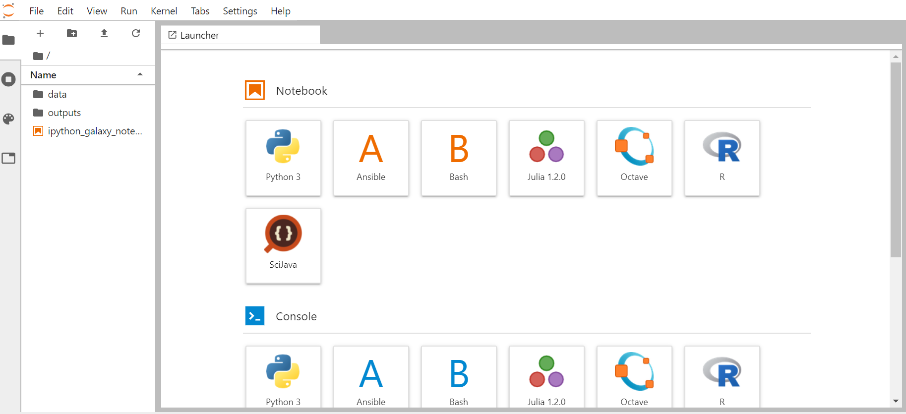
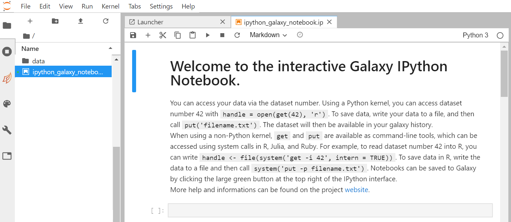
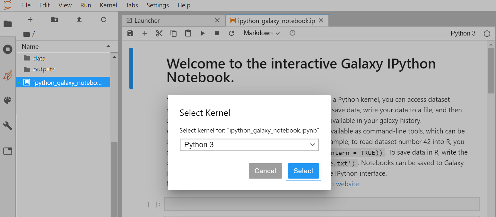
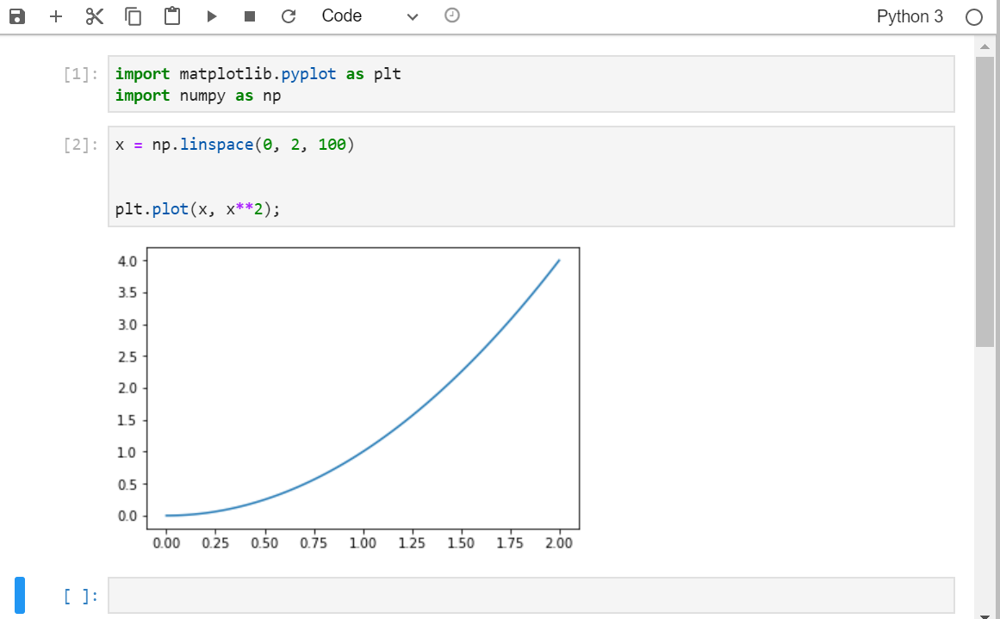

JupyterLab in Galaxy
 Anne Fouilloux
Anne FouillouxOverview
Questions:Objectives:
How can I manipulate data using JupyterLab in Galaxy?
How can I start a notebook in JupyterLab?
How can I import/export dataset from/to my history to/from the notebook?
How can I save my notebook to my history?
Launch JupyterLab in Galaxy
Start a notebook
Import libraries
Use get() to import datasets from your history to the notebook
Use put() to export datasets from the notebook to your history
Save your notebook into your history
Time estimation: 1 hourLast modification: Sep 2, 2021
 Questions:
Questions:
Introduction
comment Comment
This tutorial is significantly based on the JupyterLab documentation “The JupyterLab Interface” section.
JupyterLab is an Integrated Development Environment (IDE). Like most IDEs, it provides a graphical interface for R/Python, making it more user-friendly, and providing dozens of useful features. We will introduce additional benefits of using JupyterLab as you cover the lessons.
Agenda
In this tutorial, we will cover:
JupyterLab
Opening up JupyterLab Tool: interactive_tool_jupyter_notebook is quite easy:
Hands-on: Launch JupyterLab
tip Tip: Launch JupyterLab in Galaxy
Currently JupyterLab in Galaxy is available on Live.useGalaxy.eu, usegalaxy.org and usegalaxy.eu.
hands_on Hands-on: Run JupyterLab
- Interactive Jupyter Notebook Tool: interactive_tool_jupyter_notebook :
- Click Execute
- The tool will start running and will stay running permanently
- Click on the User menu at the top and go to Active Interactive Tools and locate the JupyterLab instance you started.
- Click on your JupyterLab instance
tip Tip: Launch Try JupyterLab if not available on Galaxy
If JupyterLab is not available on the Galaxy instance:
- Start Try JupyterLab
You should now be looking at a page with the JupyterLab interface:

As shown on the figure above, JupyterLab interface is made of 3 main areas:
- The menu barat the top
- The left side bar with in particular the File Browser
- The main work area in the central panel
Start your first notebook
Now that we are ready to start exploring JupyterLab, we will want to keep a record of the commands we are using. To do this we can start a Notebook.
hands_on Hands-on: Start a notebook
- On the left side bar, in the File Browser, double-click on the file called ipython_galaxy_notebook.ipynb. This will open the default notebook in the main work area.
- If ipython_galaxy_notebook.ipynb does not exist (for instance on Try JupyterLab) then click on + (top left) to start The launcher and then Python icon in the Notebook section to create a new blank notebook.
A new notebook appears in the centre panel. Before we go any further, you should learn to save your script.
hands_on Hands-on: Save a Python notebook
- Click the File menu and select **Save Notebook As… Alternatively, you can also:
- Click the galaxy-save icon (Save the notebook contents and create checkpoint) in the bar above the first line in the script editor
- Click the File menu and select Save Notebook
- Type CTRL+S (CMD+S on OSX)
- In the Save Notebook As window that opens, name your file
ipython_galaxy_notebokAlternatively, you can also rename your Jupyter Notbook:
- Right click on the name (
Untitled.ipynb) in the bar above the first line in the script editor and select Rename Notebook
The new script ipython_galaxy_notebook.ipynb should appear in the File Browser* in the left panel. By convention, Jupyter notebooks end with the file extension .ipynb independently of the programming language (R, Python, Octave, Julia, etc.).

comment Note: supported programming languages
Depending on your JupyterLab instance, the list of supported programming languages may vary. On Live.useGalaxy.eu, the following programming languages are currently supported:
- Python 3
- Julia
- R
- Octave
- Ansible
- Bash
- SciJava
By default, a Python notebook is started. Don’t worry if you are not familiar with Python programming language, it is not necessary for this tutorial. The same functionalities applies for any available programming languages.
comment Note: switching to another programming language
Once you have created a Notebook, you can switch to another available programming language (Switch kernel).
- On the top right of your running Notebook, click on Python 3. A new window pops up: 
- In this new window, click on Python 3 to select an available programming language (R, octave, Julia, etc.).
- Click on Select to activate your selection. The pop-up window closes and you are ready to use your notebook with the selected programming language. Alternatively, you can also:
- Click on + (top left menu) to start the Launcher. The list of available programming language is given in the Notebook section.
- Click on icon of your choice in the Notebook section.
- A new notebook is created with the programming language of your choice.
hands_on Hands-on: Import Python libraries
- Click on a cell of your notebook to edit it (verify that it is defined as a
Codecell)- Enter the following lines :
import numpy as npandimport matplotlib.pyplot as plt.shift+returnto run the cell or click on the run cell button.
Graph Display in JupyterLab with Python
In this tutorial we are going to simply plot a simple graph using generated data.
hands_on Hands-on: Draw a simple plot
- Generate a simple dataset
x = np.linspace(0, 2, 100)andy = x**2- Create your figure with the command
fig, ax = plt.subplots( nrows=1, ncols=1 ,figsize=(15, 10) )
nrows=1, ncols=1means you will have one plot in your figure (one row and one column)figsizeparameter determine the size of the figure- Draw the plot with the command
plt.plot(x, y);
Interaction between JupyterLab and Galaxy
Import / export Data
You can import data from Galaxy history using the get(12) command, with the number of your dataset in the history (If you are working on a collection, unhide datasets to see their numbers).
If you want to save a file you generated in your notebook, use the put("file_name") command. That is what we are going to do with our distribution plot.
hands_on Hands-on: Save an Jupyter generated image into a Galaxy History
- Create an image file with the figure you just draw with the command
fig.savefig('simpleplot.png')- Export your image into your history with the command
put('simpleplot.png')
Save the Notebook in your history
Once you are done with you analysis or anytime during the editing process, you can save the notebook into your history using the put("ipython_galaxy_notebook.ipynb"). If you create additional notebooks with different names, make sure you save them all before you quit JupyterLab.
This will create a new notebook .pynb file in your history every time you click on this icon.
hands_on Hands-on: Closing JupyterLab
Click User: Active Interactive Tools
Tick galaxy-selector the box of your Jupyter Interactive Tool, and click Stop
Conclusion
Key points
How to work with JupyterLab interactively within Galaxy
Frequently Asked Questions
Have questions about this tutorial? Check out the FAQ page for the Using Galaxy and Managing your Data topic to see if your question is listed there. If not, please ask your question on the GTN Gitter Channel or the Galaxy Help ForumFeedback
Did you use this material as an instructor? Feel free to give us feedback on how it went.

Citing this Tutorial
- Anne Fouilloux, 2021 JupyterLab in Galaxy (Galaxy Training Materials). https://training.galaxyproject.org/training-material/topics/galaxy-interface/tutorials/jupyterlab/tutorial.html Online; accessed TODAY
- Batut et al., 2018 Community-Driven Data Analysis Training for Biology Cell Systems 10.1016/j.cels.2018.05.012
details BibTeX
@misc{galaxy-interface-jupyterlab, author = "Anne Fouilloux", title = "JupyterLab in Galaxy (Galaxy Training Materials)", year = "2021", month = "09", day = "02" url = "\url{https://training.galaxyproject.org/training-material/topics/galaxy-interface/tutorials/jupyterlab/tutorial.html}", note = "[Online; accessed TODAY]" } @article{Batut_2018, doi = {10.1016/j.cels.2018.05.012}, url = {https://doi.org/10.1016%2Fj.cels.2018.05.012}, year = 2018, month = {jun}, publisher = {Elsevier {BV}}, volume = {6}, number = {6}, pages = {752--758.e1}, author = {B{\'{e}}r{\'{e}}nice Batut and Saskia Hiltemann and Andrea Bagnacani and Dannon Baker and Vivek Bhardwaj and Clemens Blank and Anthony Bretaudeau and Loraine Brillet-Gu{\'{e}}guen and Martin {\v{C}}ech and John Chilton and Dave Clements and Olivia Doppelt-Azeroual and Anika Erxleben and Mallory Ann Freeberg and Simon Gladman and Youri Hoogstrate and Hans-Rudolf Hotz and Torsten Houwaart and Pratik Jagtap and Delphine Larivi{\`{e}}re and Gildas Le Corguill{\'{e}} and Thomas Manke and Fabien Mareuil and Fidel Ram{\'{\i}}rez and Devon Ryan and Florian Christoph Sigloch and Nicola Soranzo and Joachim Wolff and Pavankumar Videm and Markus Wolfien and Aisanjiang Wubuli and Dilmurat Yusuf and James Taylor and Rolf Backofen and Anton Nekrutenko and Björn Grüning}, title = {Community-Driven Data Analysis Training for Biology}, journal = {Cell Systems} }